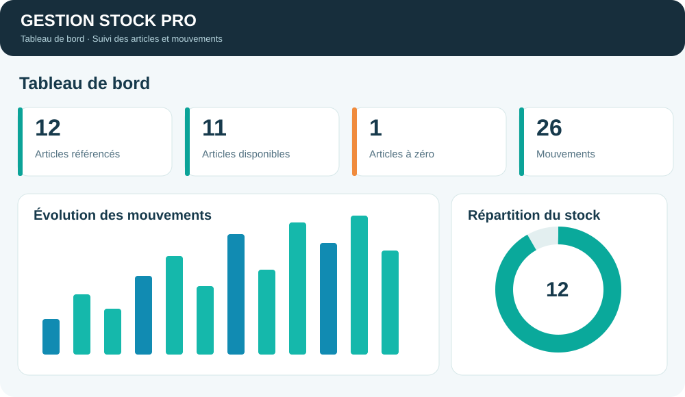

Réception & documents
Contrôle des marchandises, saisie et suivi des bons de livraison (BL), bons de réception (BR) et demandes internes (BCI).
Réception des matériaux, contrôle des BL, bons de sortie, inventaires et approvisionnement des équipes : une expérience concrète en magasin de chantier BTP, appuyée par SAP et Excel/VBA.
EXPÉRIENCE CHANTIER · SAFI · SGTM WAVE II
 MAGASIN CHANTIER · MATÉRIAUX BTP
MAGASIN CHANTIER · MATÉRIAUX BTPRéception, rangement, inventaire, mouvements de stock et coordination avec les équipes chantier : les principales missions que j’ai exercées sur le terrain.

Organisation du magasin, contrôle des quantités, traçabilité des mouvements, préparation des demandes et coordination avec les équipes chantier. Une approche rigoureuse pour limiter les écarts et anticiper les besoins.
Contrôle des marchandises, saisie et suivi des bons de livraison (BL), bons de réception (BR) et demandes internes (BCI).
Enregistrement des mouvements, bons de sortie (BS), transferts inter-chantiers et traçabilité des articles et pièces.
Inventaires hebdomadaires et mensuels, rapprochement du stock physique avec les données et identification des écarts.
Réceptions et inventaires sur SAP, consultation de commandes et demandes d’achat ; tableaux Excel, formules et automatisations VBA.
Surveillance des niveaux de stock, alertes de stock minimum, anticipation des ruptures et remontée des besoins.
Rangement du dépôt, suivi des EPI et consommables, répartition des tâches et échanges avec demandeurs et responsables chantier.
En fonction de vos besoins, je peux concevoir des outils personnalisés pour simplifier vos opérations, centraliser vos données et automatiser les tâches répétitives.
Exemples de solutions proposées sur mesure ; leur réalisation et leurs fonctionnalités dépendent du cahier des charges.
Je peux intervenir sur la gestion quotidienne de votre stock et concevoir des outils de gestion adaptés à votre activité.
Au projet WAVE II à Safi, j’ai participé au suivi des matériels, consommables et équipements nécessaires aux équipes chantier.
Vérification des références, quantités et états des articles reçus, rapprochement avec les documents de livraison.
Préparation des sorties de matériel, suivi des demandes internes et traçabilité des bénéficiaires.
Inventaires hebdomadaires et mensuels, identification des écarts et contrôle des seuils minimums.
Transferts inter-chantiers, rangement du magasin et coordination avec les équipes de terrain.
Suivi des casques, gants, chaussures et autres équipements de protection individuelle.
Réceptions et inventaires dans SAP, tableaux Excel/VBA, recherche des références et états de suivi.
Du contrôle des livraisons à l’analyse des écarts, chaque mouvement doit pouvoir être vérifié et retrouvé. Cette méthode s’appuie sur les documents de magasin, les inventaires et les outils de suivi.

Suivi des pièces d'engins, des équipements de protection individuelle (EPI), des consommables et du matériel chantier. Mise à jour des tableaux de stock et préparation des états pour les responsables.
Traçabilité des opérations, identification des articles, cohérence des quantités, gestion des retours et disponibilité du matériel pour les équipes.
Mon expérience associe le suivi quotidien d’un magasin de chantier, la maîtrise des documents de stock et une solide culture informatique. Voici les missions réellement exercées et les formations suivies.
Gestion quotidienne du magasin chantier : contrôle des livraisons et bons de réception (BL/BR), enregistrement des bons de sortie (BS) et demandes internes (BCI), transferts inter-chantiers, suivi des pièces d’engins, consommables et EPI. Inventaires hebdomadaires et mensuels, rapprochement des écarts, suivi des seuils minimum et coordination avec les équipes chantier.
Outils : SAP (réceptions, inventaires, consultation des commandes et demandes d’achat), Excel avancé et VBA (suivi des stocks, formulaires et automatisations).
Conception, personnalisation et maintenance de sites web, développement de fonctionnalités PHP/JavaScript, hébergement et optimisation. Création de solutions numériques de suivi et de gestion, dont Gestion Stock Pro en Python et SQLite.
Développement et maintenance de sites WordPress et Drupal, intégration HTML/CSS, PHP et MySQL, suivi des demandes, résolution des incidents techniques, optimisation des performances et coordination des livrables.
ISMOTICA · Fès — programmation, bases de données et applications
ISTA Gestion · Fès — maintenance, réseaux et assistance informatique
Fès
Gestion documentaire BL / BR / BCI / BS, inventaires, coordination des équipes et outils numériques
Une démonstration web de mon application de gestion de stock, conçue pour présenter les principaux flux d'un magasin : réceptions, sorties, retours, inventaires, alertes et rapports. Explorez librement une simulation avec des données fictives.
Mode démonstration : données fictives, aucune inscription. Les modifications sont temporaires et réinitialisées au rechargement de la page. Cette interface web illustre le logiciel métier, sans exposer son code Python ni ses données réelles.
Un aperçu complémentaire de mon travail informatique. Les sept vues illustrent les principales fonctionnalités du logiciel. Elles ne remplacent pas les captures originales de l’application.

Vue d’ensemble des articles, mouvements, entrées et indicateurs de stock.
Demander une présentation ↗En complément de mon métier de magasinier, j’ai conçu une application de gestion de stock en Python, Tkinter et SQLite pour faciliter le suivi des entrées BL, bons de sortie et de retour, mouvements, inventaires et alertes.
Présentation du projet. Les fonctionnalités et adaptations sont définies selon les besoins de chaque entreprise.
Besoin d'une application adaptée à votre dépôt, magasin ou chantier ? Discutons de vos flux BL, BS, BR, inventaires, utilisateurs et rapports pour définir une solution adaptée.